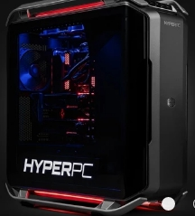

Установка процессора
Начать нужно с установки процессора в материнскую плату, а не с установки материнской платы в корпус. Так будет попросту удобнее. На материнской плате находим квадратную металлическую крышечку и открываем ее. Перед нами открывается место для процессора.
